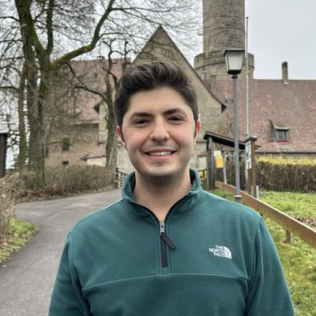

2022 – present
Ph.D., Electrical and Computer Engineering, Georgia Tech
Machine learning, biomedical signal processing · Advisor: Prof. Omer T. Inan
I am a Ph.D. student in Electrical and Computer Engineering at Georgia Tech, advised by Prof. Omer T. Inan in the Inan Research Lab.
I work on generative modeling and time-series analysis for biomedical and wearable sensing. I build flow-based generative models and physics-informed neural networks that translate and denoise physiological signals across sensor configurations while preserving phase and morphology, and validate them on real-world clinical data, not just benchmarks.
Before Georgia Tech, I did my M.S. at METU Center for Image Analysis with Prof. A. Aydın Alatan, working on event-based cameras for video frame interpolation.

My thesis studies the cardiac and morphological phase of wearable cardiovascular signals. It has three parts: estimating phase robustly (Stabilized Hilbert Transform), detecting cardiac events (heart-rate-informed Kalman filter), and translating seismocardiograms recorded at different chest locations to the standard sternum location (Cylindrical Geodesic Flow Matching).
Heart: “Beating Heart” by jalmer, CC BY 4.0. Anatomy: BodyParts3D, © The Database Center for Life Science, CC BY 4.0.
Papers where I am first or second author. * equal contribution. Highlighted: first-author papers. Full list on Google Scholar.
Imposes a known source-to-target physiological law, a learned two-element Windkessel model, directly on the flow-matching vector field at every flow time rather than only on predicted endpoints.
Translates quasiperiodic signals such as PPG and SCG across sensing locations by flow matching along a closed-form geodesic on the phase–amplitude cylinder instead of the standard affine path.
Turns full clinical practice guidelines into executable decision graphs through topology-aware chunking, interface-constrained graph generation and provenance-preserving aggregation.
An autoregressive Kalman filter that estimates its noise covariances adaptively, for beat-to-beat forecasting of cardiac timing intervals without hyperparameter tuning.
Estimates stroke volume and cardiac output from wearable ECG, SCG and PPG without baseline calibration, in a porcine hemorrhage and resuscitation model.
Uses events to locate moving regions and emphasizes them with a region-biased loss, reducing ghosting and blur in interpolated frames.
A lightweight kernel-based interpolator that fuses event and RGB features with deformable convolutions and encodes events with multi-head self-attention.
Detects where the Hilbert phase becomes unstable at low amplitude and replaces it with the smoothest phase trajectory consistent with the observed phase change.
Classifies knee osteoarthritis from acoustic emission spectrograms with a transfer-learned ResNet-18, using FullGrad saliency to show which time–frequency regions drive each decision.
Compares sternum and back reflectance PPG with finger PPG across posture and breathing changes in 24 healthy participants.
Detects aortic valve opening and closure in noisy seismocardiograms by combining heart-rate-scaled candidate selection from a resting baseline with a Kalman filter.
Ph.D., Electrical and Computer Engineering, Georgia Tech
Machine learning, biomedical signal processing · Advisor: Prof. Omer T. Inan
M.S., Electrical and Electronics Engineering, Middle East Technical University (METU)
Thesis: Utilization of Event-based Cameras for Video Frame Interpolation · Advisor: Prof. A. Aydın Alatan
B.S., Mathematics (double major), METU
High honors
B.S., Electrical and Electronics Engineering, METU
Signal processing and communications · High honors
Graduate Research Assistant, Inan Research Lab, Georgia Tech
Flow-matching generative models, physics-informed neural networks, instantaneous phase estimation and Kalman-filter event detection for physiological signals. Ran laboratory and clinical sensing studies (IRB, recruitment, multimodal data collection), and mentor graduate and undergraduate students.
Scientific Project Specialist, METU Center for Image Analysis
Real-time embedded camera system to improve face-recognition quality (multi-threaded C++ on HiSilicon cameras).
Data Science Intern, Cardiosense, Chicago
Reconstruction and representation learning for signal-quality assessment to improve PCWP estimation; curated a multimodal clinical waveform dataset of millions of windows for foundation-model training.
Research Engineer, MetaDialog, Dubai
LLM pipelines that turn multimodal clinical guidelines into executable decision graphs, plus LLM agents for code generation and data extraction.
Intern, HAVELSAN, Ankara
Object detection and segmentation based on Mask R-CNN and ResUNet.
Intern, ESEN System, Ankara
SVM-based pedestrian detection with a GUI for wide-area surveillance.
TA, Georgia Tech ECE 4122/6122 Advanced Programming Techniques (Fall 2023)
TA, Georgia Tech ECE 3550 Feedback Control of Dynamic Systems (Summer 2023)
TA, Georgia Tech ECE 4803/8804 Fundamentals of Machine Learning (Spring 2023)
TA, METU EE213/EE214 Electrical and Electronics Circuits Lab (2021–2023)
TA, METU EE306 Signals and Systems II (Spring 2021)
Best Presentation, CVPR 2026 workshop (Medical Reasoning with VLM Foundation Models)
Best Paper, BSN 2025
Georgia Tech ECE Fellowship (2022)
Bülent Kerim Altay Award (2020)
METU High Honor Student (2016–2020) · TÜBİTAK 2205 Scholarship (2016–2020)